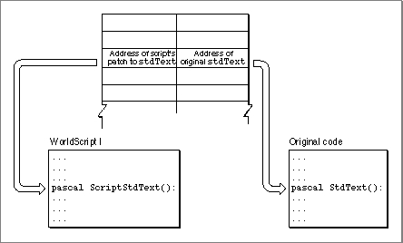
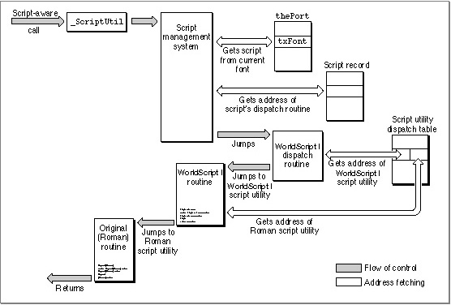
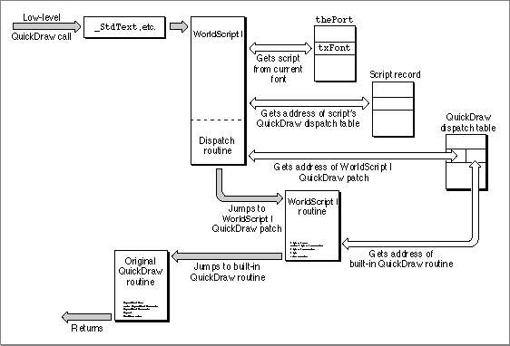

How Calls Are Dispatched
In every script system that is compatible with WorldScript I, the dispatch-table element for every script utility and QuickDraw patch consists of two pointers: one to the WorldScript I implementation of the routine and one to the original routine. In all cases, the WorldScript I routine executes first. In some cases, WorldScript I calls the original routine after its own; in other cases, the pointer to the original routine isNILand the WorldScript I routine is all that executes. See Figure A-2. This design allows you to place a patched routine so that it executes either before, in place of, or after the WorldScript I routine and allows you to either call the original routine or not call it.Figure A-2 Dispatch table entry for script utilities and QuickDraw patches

Every script-aware call to system software that executes as a script utility goes through the_ScriptUtiltrap ($A8B5). The script management system handles some of those calls, such asGetSMVariable, itself; other calls, such asDrawJustified, it passes to a script system through the script system's script record. Those calls are listed in Table A-11 on page A-26. The script system uses its script utility dispatch table to call the right script utility. See Figure A-3.When it receives a script utility call, a script's dispatch routine does the following:
Figure A-3 How calls are dispatched to the 1-byte script utilities
- It checks to see if the call (as defined by the script utility selector) is within the range of routines handled by the script.
- It gets the address of the script utility from the script's dispatch table, using the script utility selector.
- It replaces the selector on the stack with the address of its own script record.
- It jumps into the WorldScript I routine obtained in step 2. As the routine executes, it obtains script-specific characteristics from the script record passed to it in step 3.
- The WorldScript I routine gets the address of the original (Roman) routine from the dispatch table and, if it is not
NIL, jumps to that routine upon completion.
A patched low-level QuickDraw call follows a similar path, except that it goes through a QuickDraw trap that has been patched to execute code in WorldScript I instead of passing through the script management system. After determining which script should handle this call (by examining the current font), WorldScript I uses the script's QuickDraw dispatch table to jump to the proper routine. See Figure A-4.Figure A-4 How calls are dispatched to the 1-byte QuickDraw patches
